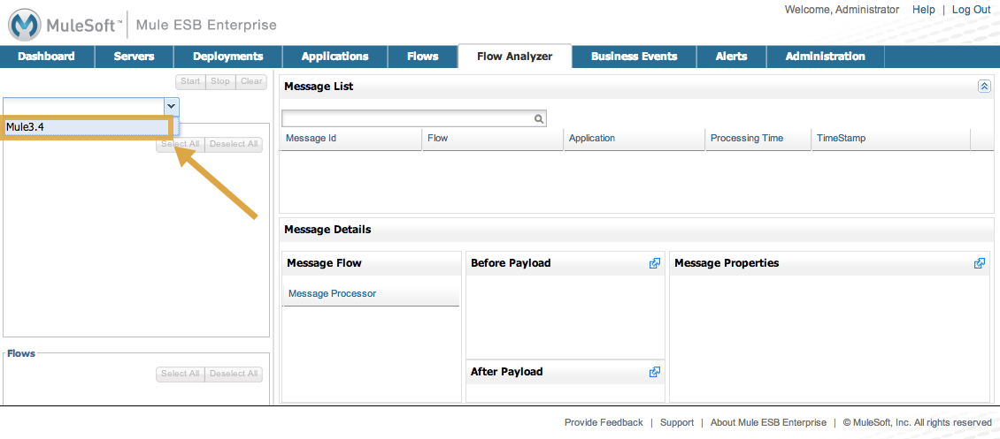
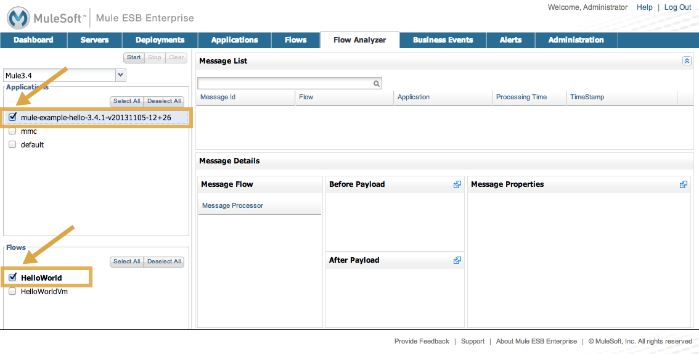
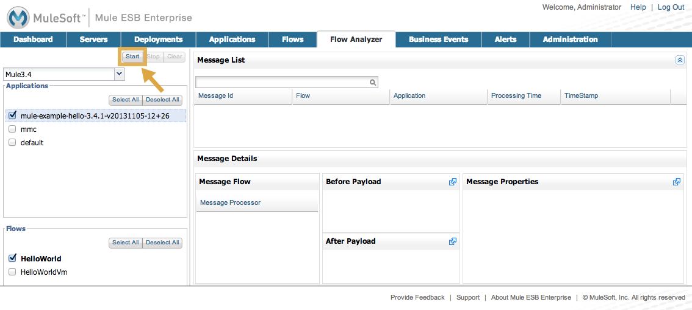

Orientation to the Console
This page introduces the Mule Management Console’s user interface. It covers basic information about how to customize your dashboard and interact with the functionality available on the various tabs.
Assumptions
This document assumes that you have downloaded and installed either the trial version or the production version of the Mule Management Console.
|
If you have downloaded the trial version of Mule ESB Enterprise with Management Tools, you have everything you need to get started. Fire up Mule and enter If you have downloaded the production version, enter the URL for the MMC application as served by your application server. For example, in Tomcat this usually is |
This document also assumes that you are familiar with Mule applications and Mule flows .
The Quick Start Panel
When you first start the console and log in, you are presented with the Quick Start panel, giving you immediate access to the common tasks you might wish to perform.
The icons on the left side provide quick links to screens for registering servers, deploying applications, creating alerts, and managing users and permissions. If you hover your mouse over the individual tabs, pop-up tips display.
Keep in mind that if you have just installed a Mule ESB server, the server must be registered with the console and you may need to connect the console to that server before using any of the other console features. To register servers, click the icon to the left of Register Servers or the Servers tab at the top.
| If you are using the trial version, the console is running embedded in the Mule server and is already connected and monitoring the local instance. |
Click the X at the top right of the Quick Start panel to dismiss the panel and view the dashboard.
The Dashboard
By default, the Dashboard displays four portlets: Server Health, Raised Alerts, Deployment Status, and Server Metrics. A portlet is a customized view of information about your servers or applications. To display additional portlets, click the Add Portlet button, then click those portlets you want displayed. Click the X icon in the title bar of a portlet you want removed from the dashboard. For more information on customizing the dashboard, see Customizing the Dashboard.
Layout of the Console
Notice that, for many of the console tabs, the Management Console screen is divided into two sections:
-
A context-sensitive navigation pane on the left
-
A details pane on the right that reflects the particular tab you have selected
For example, the figure below shows how the Servers tab might appear when you first log in. When you select the Servers tab, the navigation pane displays the organization or grouping of the servers, while the details pane shows summary information in columnar form about each server instance. Notice that when you hover the mouse over a column, a pull-down menu icon appears, allowing you to sort by that column’s data or configure which columns to display or hide.
The function buttons for the navigation pane let you add a new server group, rename a group, or delete a group. Similarly, the buttons available for the details pane provide functions for operating on individual servers. Notice that these buttons, except for Add, are grayed out. When you select a particular server, by clicking the box to the left of that server, the buttons become operational and you can click the function you want to apply, such as adding the server to a group.
Using the Console
Use the tabs across the top of the console to view and manage your servers, applications, and flows, along with other administrative tasks.
If you are in Operations, you might be particularly interested in these console tabs and screens, depending on the tasks you need to perform:
-
To manage the application repository and deployments, use the Deployments Tab tab
-
To monitor a server or cluster, such as to check if the server/cluster is up or down, see how much memory it is using, or generally keep an eye on the server profile, use the Servers Tab tab
-
To define or view alerts about server or cluster health, memory usage, etc, use the Alerts Tab tab
-
To check on performance bottlenecks so that you can alert developers, look at the Flows Tab tab as well as the
Flow Analyzer tab
If you are a developer, you might find these tabs and screens of most use to you:
-
To diagnose problems, such as memory and performance bottlenecks, use the Flows Tab and Flow Analyzer Tab tabs. The Flow Analyzer tab is particularly helpful because it lets you audit a flow so that you can debug the flow performance and verify payload content along with message properties
-
If you need to manage deployments or the application repository, use the Deployments Tab tab
-
If you need to create scripts to automate tasks, use the Administration Tab tab
The Administration Tab tab is intended for Management Console administrators. They can use these screens to manage users and roles, handle licensing issues, and schedule automated tasks.
Servers Tab
Click the Servers tab to add and remove Mule ESB server instances, register servers, create your own groups to organize servers, add servers to one or more groups, start or stop servers, or move them between groups. You can also use the Servers tab to create a new cluster, add nodes to a cluster, or disband a cluster.
Use the Add button in the details pane to add a new server or a new cluster. Use the Remove button to unregister a server or disband a cluster and return its nodes to the pool of standalone instances.
To get detailed information about a particular server, click the server’s name in the details pane table. The figure below shows the summary details about a selected server.
Click any of the tabs in the details pane to view more specific information about the selected server, such as the applications deployed on that server, any alerts that have occurred and memory usage; plus information about threads, pools, files, server properties, OS resources, JMX, and settings for the server.
See Monitoring a Server for more details on using the server screens.
Deployments Tab
Use the Deployments tab to view and manage deployments, which are groups of applications deployed to the server. You can also use the Deployments tab to view and manage applications deployed to a cluster.
From this tab, you can deploy, redeploy, and undeploy groups of applications. You can also maintain the applications stored in the repository.
See Deploying Applications for details on deployments.
See Maintaining the Server Application Repository for more information on the repository.
Applications Tab
Use the Applications tab to browse or search for applications currently deployed on a server or a cluster. The table on this tab displays useful summary information about each application, such as the version, the server, group, or cluster on which it is deployed, and the name of the deployment in which this application is deployed. To manage the application, click the name of the deployment to navigate directly to the relevant deployment details.
Flows Tab
Flows are Mule configurations that include all the different components or message processors – including transformers, controllers, routers, filters, the main application class or Web component, along with the message source or endpoint itself – for processing an application’s message. Similar to the Servers tab, you click the Flows tab to get information about and to manage specific flows.
Flow Analyzer Tab
Use the Flow Analyzer tab to see detailed information about your flows that the console captures for you. To view information for a flow:
-
Select a server from the drop-down menu in the navigation pane.
 -
Select one or more applications deployed on that server, then select one or more flows.
 -
Click Start.

Once you have started the flow analyzer, MMC audits and records details about each message that passes through the flow. You can click into messages, message processors, and properties to view granular information about your flow activity.
See Working with Flows and Debugging Message Processing for more details on analyzing flows.
| Flow analysis is not available for clusters. It is primarily a development-time tool. However, you can use it on a standalone server running an application that you plan to deploy to a cluster. |
Business Events Tab
Use the Business Events tab to retrieve information, such as processing time and errors, for business transactions and events on your Mule servers. You can set up queries to select and view subsets of business transactions handled by your servers. You specify various criteria for selecting transactions, search for particular values, and apply filters to the results.
See Analyzing Business Events for more details.
Alerts Tab
Use the Alerts tab to view and manage alerts or SLAs.
See Working With Alerts and Defining SLAs and Alerts for more details.
Administration Tab
The Administration tab lets you manage users and user groups, as well as set up and schedule utility scripts.
See Managing MMC Users and Roles for more details on administering users.
See Automating Tasks Using Scripts to get started with utility scripts.
See Also
-
Learn the basics of using MMC with the MMC Walkthrough .